Selected
frames.
A gallery edited for visual quality — composition, light, texture, colour and atmosphere. No ranking by project importance. If a frame is here, it earned its place visually.
CURATION RULEQuality → Edit → SequenceRepetition, weaker frames and graphics that compete with the photographs are left out.
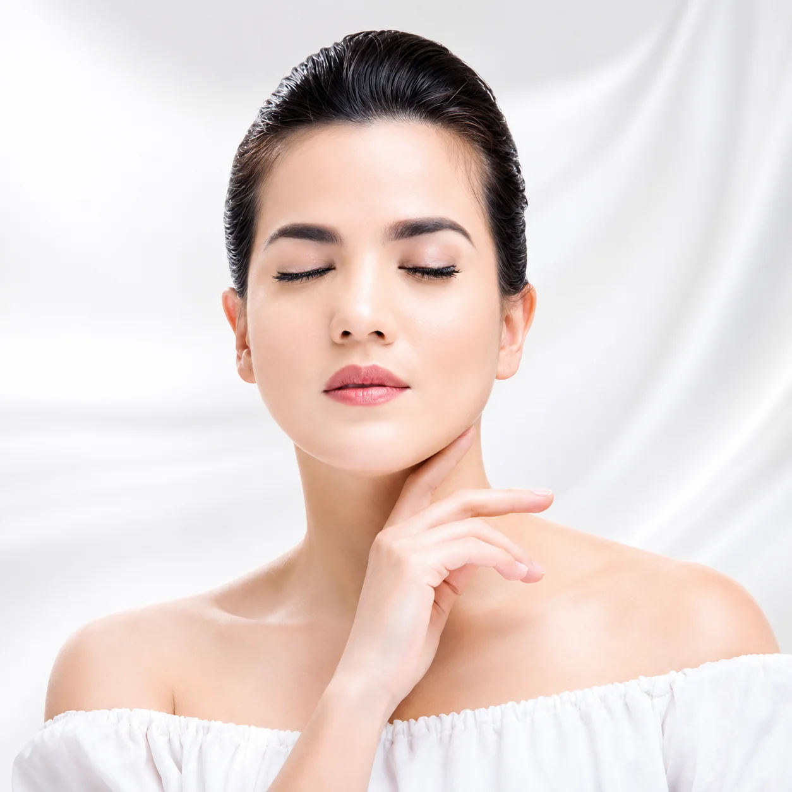
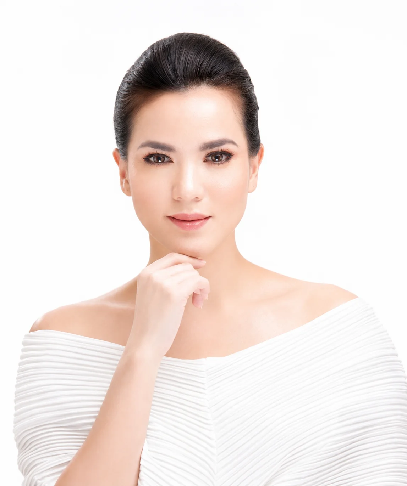

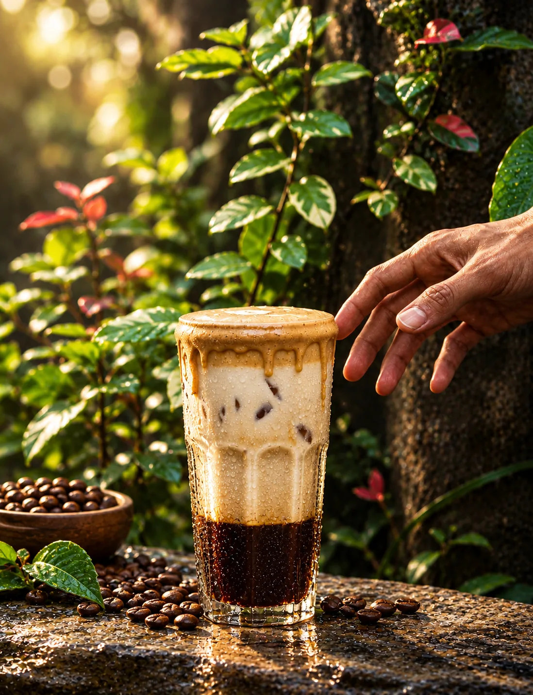
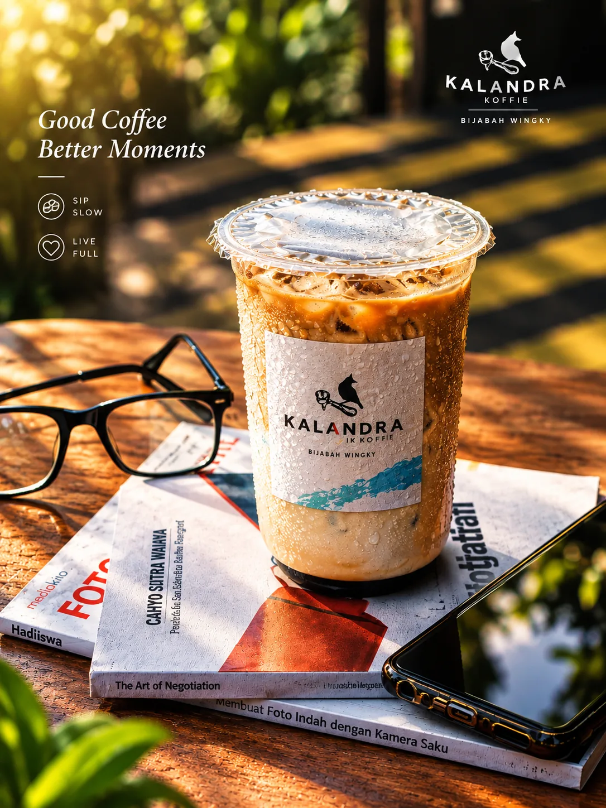

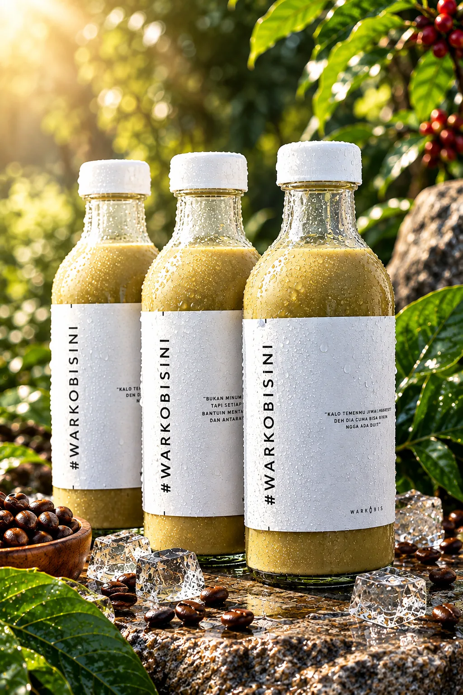
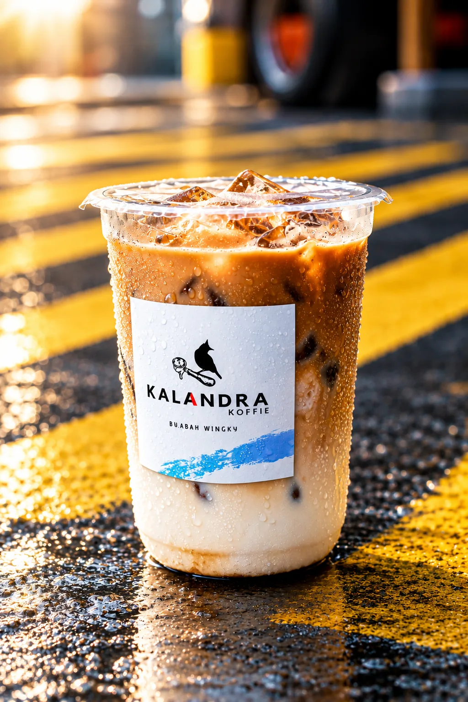
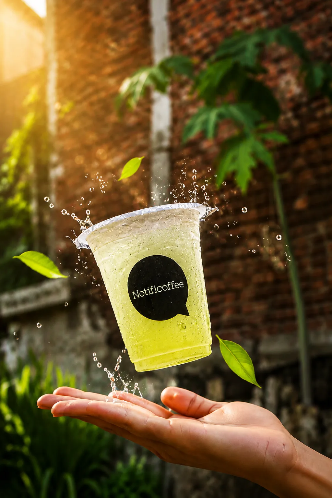
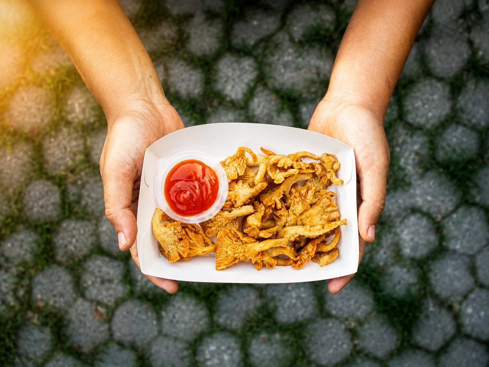
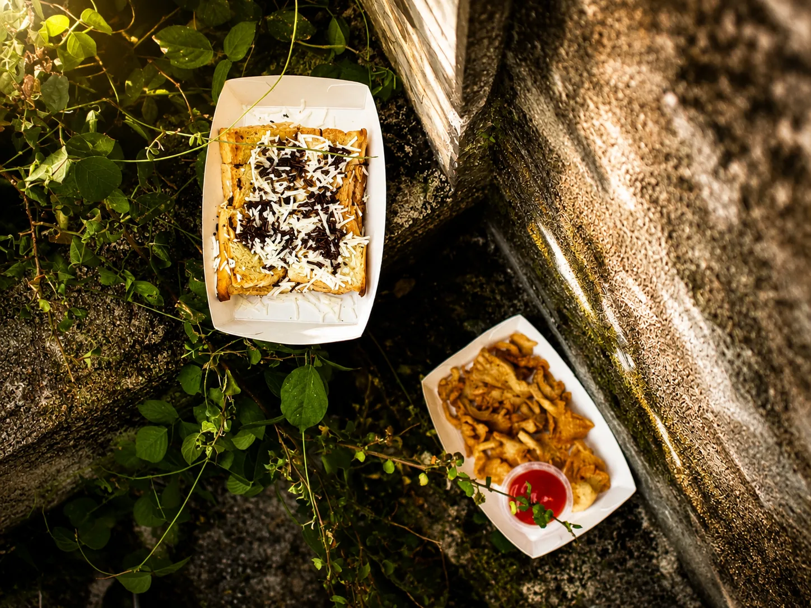
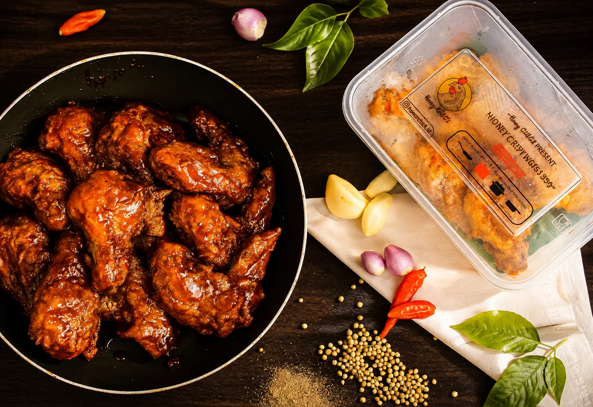

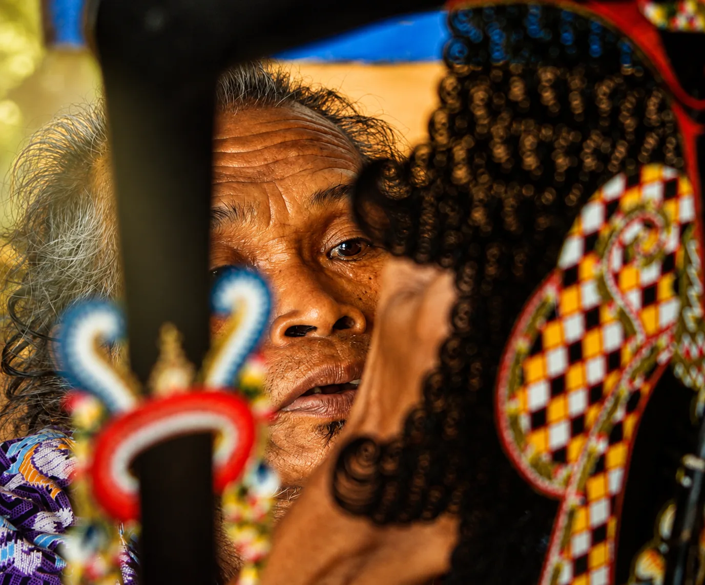
Only the frames
worth keeping.
This layer is intentionally smaller than the archive. The point is not to prove range. It is to show taste.
DISCUSS A PHOTO / PRODUCTION BRIEF ↗